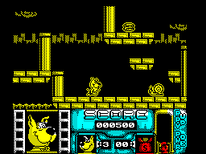

Scooby-Doo and Scrappy-Doo


| Publisher: | Hi-Tec |
| Price: | £2.99 |
| Year: | 1991 |
| Source: | CRASH, Issue 88 |

Puh-puh-puppy power is the order of the day in this Hi-Tec game where you play the part of Scrappy Doo, searching for Uncle Scooby. As usual, Scooby’s rumbling stomach has got him into trouble, so it’s Scrappy Doo to the rescue through the four levels that make up the game.

own smashing platform game!
You start in the Ghost Town and leap and jump your way across many platforms and battle through the many traps that litter your path. Plenty of nasty creatures stand between you and success, but you can hit your attackers; the longer the fire button is held down, the stronger the punch. Along the way there are bonus objects to collect, including invincibility, bonus points and extra lives.
There’s plenty of fun to be had with Scooby and Scrappy Doo. the character sprites, despite being monochrome, are really well drawn — Scrappy really does look as if he means business. The game is fairly tough to get into, but a bit of practice soon puts you on the right track. Addictive, entertaining with hassle-free gameplay, notch up another successful cartoon licence to Hi-Tec and a very playable game for you. Hurrah!
MARK
RATING
| Overall: | 90% |